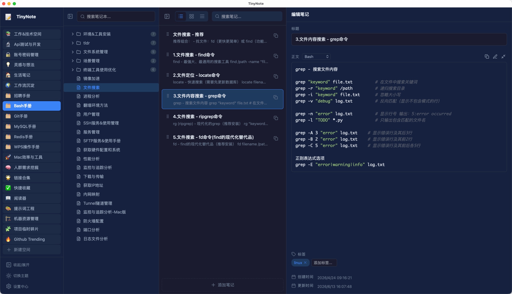
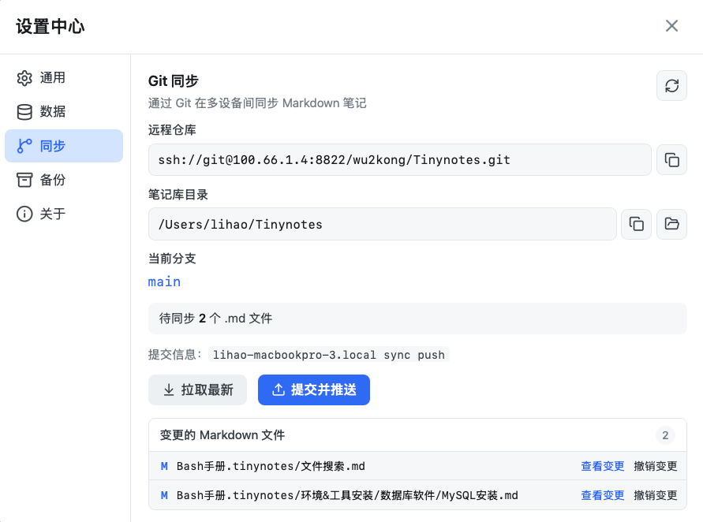
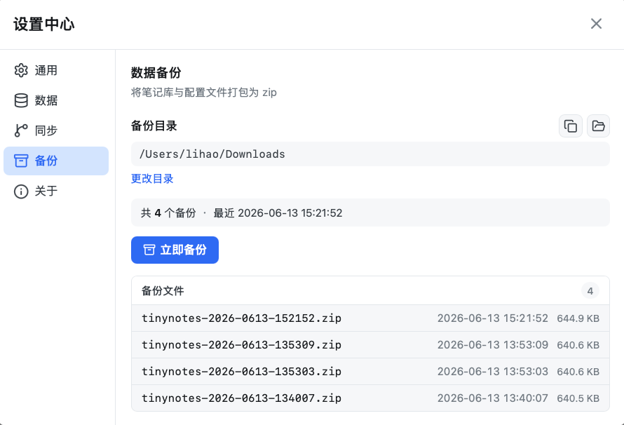

轻量极速，为高频复制而生
小体积、快启动、快检索——再叠加一键复制，让知识取用回归「点一下」的简单
5~10MB 轻量安装
基于 Tauri 构建，安装包仅约 5~10MB。无需忍受臃肿客户端，下载安装几乎无感，磁盘与内存占用极低。
极速启动
原生桌面性能，启动几乎没有等待。需要查命令或贴片段时，应用始终能跟得上你的节奏。
快速检索
目录栏与笔记栏均内置搜索，在海量笔记块中迅速定位。找到目标后立刻复制，检索与取用一气呵成。
一键快捷复制
每个笔记块都配有复制按钮，点击即可将内容送入剪贴板。支持复制标题、内容或完整笔记，配合 Toast 提示，操作反馈清晰。专为 Shell 命令、JSON 配置、Prompt 模板等高频复制场景优化。
无限层级组织
空间 → 目录 → 笔记 → 笔记块，四层结构映射真实文件目录，支持无限嵌套目录。
三种视图模式
列表、卡片、紧凑三种视图随心切换，适配不同内容密度与个人偏好。
拖拽排序
笔记块、空间、目录与笔记均支持拖拽重排，结构调整直观自然。
Markdown 源码模式
笔记以 Markdown 扩展格式存储，可直接编辑源码。与文件系统一一对应，可用任意编辑器打开，也可以用 Git 管理版本。
标签与属性编辑
右侧属性面板支持编辑标题、正文与标签，创建与更新时间一目了然，方便追踪笔记生命周期。
四栏工具型布局，低打扰
应用栏、目录栏、笔记栏与属性编辑栏分工明确，专为桌面端高频管理优化。浅色与深色主题随心切换，长时间使用也不累眼。
简洁现代，深浅自如
四栏布局清晰分区：应用栏、目录栏、笔记栏与属性编辑栏，信息层级一目了然

同步与备份，双重保障
笔记库即 Git 仓库，支持远程同步；本地备份一键打包，数据安全无忧
笔记库就是 Git 仓库
将笔记库存储目录初始化为 Git 仓库后，即可在应用内完成拉取、提交与推送。变更文件列表、Diff 预览、单文件撤销一应俱全，多设备协作或云端备份触手可及。
- 查看远程仓库与分支信息
- 一键 Pull / Push，自动生成提交信息
- 变更文件 Diff 预览与单文件撤销

一键打包，随时恢复
指定备份目录后，一键将笔记库与配置打包归档。备份历史清晰列出文件名、时间与大小，重要数据多一份本地保障。
- 自定义备份存储位置
- 笔记库 + 配置文件一并打包
- 备份列表与文件大小统计

基础免费，Pro 一次买断
核心笔记与复制永久免费。需要更多空间、文章笔记与 Git 同步时，升级 Pro 即可。
基础版
日常片段管理够用
- 空间最多 5 个
- 每空间笔记最多 100 个
- 一键复制、搜索、主题
- 本地 Markdown / 备份
Pro 高级版
解锁专业工作流
- 无限空间与笔记
- 新建文章笔记（Markdown / 写作）
- 设置中心 Git 同步
- 三端通用 · 最多 3 台设备
不是另一种 Notion，而是不同的效率路径
TinyNote 专注「零碎片段的高频取用」，与传统长文笔记、云端文档是互补关系，而非替代关系
| 维度 | 传统笔记管理模式 | TinyNote 轻记 |
|---|---|---|
| 产品定位 | 长文撰写、知识库搭建、团队协作文档（如 Notion、印象笔记、OneNote、语雀） | 命令、代码片段、配置模板等零碎知识的管理与快捷复制 |
| 内容形态 | 以「篇」为单位的长文档、富文本页面，强调排版与叙述 | 以「块」为单位的短片段，每条笔记块独立可复制 |
| 取用方式 | 打开笔记 → 滚动定位 → 鼠标框选 → 复制，步骤多、易打断心流 | 搜索定位 → 一键复制，无需框选，专为「拿来就用」设计 |
| 安装与启动 | 安装包通常 100MB+，启动与同步有一定等待 | 安装包约 5~10MB，极速启动，本地优先、响应即时 |
| 数据存储 | 多依赖云端账号与专有格式，离线能力因产品而异 | 纯本地 Markdown 文件，目录即结构，可用 Git 管理、任意编辑器打开 |
| 组织结构 | 笔记 / 标签 / 双向链接等，侧重知识网络与关联 | 空间 → 目录 → 笔记 → 笔记块，映射文件目录，侧重分类与快速定位 |
| 典型场景 | 会议纪要、项目文档、学习笔记、团队 wiki | Shell 命令手册、API 片段库、Prompt 模板、账号备忘、运维脚本 |
更适合传统笔记的场景
需要写长文、插入图片表格、多人协作批注、或构建复杂的知识图谱时，Notion、飞书文档、Obsidian 等仍是更合适的选择。TinyNote 并不试图覆盖这些需求。
更适合 TinyNote 的场景
每天反复复制同一段命令、同一份 JSON 配置、同一个 API 地址；需要把零碎信息分类归档，但又不想每次翻长文档框选。这正是 TinyNote 要解决的高频痛点。
围绕日常高频管理需求，快速迭代
TinyNote 由真实工作流驱动演进——Git 同步、本地备份、多视图切换、源码模式等功能，都来自日常管理命令片段时的切身需求。项目持续开源维护，欢迎通过 GitHub Issue 提出场景与建议，让工具跟着你的效率习惯一起成长。
开始整理你的零碎知识
基础功能永久免费。需要 Pro 时一次买断，无需订阅。